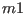
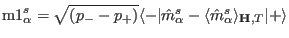
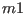
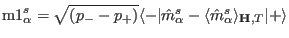

Next: External module function Lcalc Up: Module Functions for Observables Previous: External module function mcalc Contents Index
In order to visualized magnetic moment fluctuations and to calculate neutron intensities
in dipole approximation the external single ion module has to provide the transition
matrix elements of the magnetic moment operator in units of  by the
vector , which is given by:
.
by the
vector , which is given by:
.
The format to be used is:
extern "C" int dm1(int & tn,double & T,Vector & Hxc,Vector & Hext,double * g_J,Vector & MODPAR, char ** sipffilename,ComplexVector & m1,float & maxE, ComplexMatrix & est)
The meaning of the symbols is as follows:
on input
|tn| transition-number
sign(tn) >0 standard, <0 routine should do some printout to stdout for user information
MODPAR Vector with Parameters read in single ion property file
sipffilename file name of the single ion parameter file
g_J Lande factor
T Temperature[K]
Hxc vector of exchange field [meV] (can be n-dimensional, for a set of n operators)
Hext external magnetic field [T]
est eigenstate matrix (initialized by estates)
it should/may also contain population numbers of the states
(imaginary part of row 0)
and eigenvalues (real part of row 0) with values set by the most recent call
for this ion (use of this matrix is optional)
u1(1) ninit + i pinit (from mcdisp options -ninit and -pinit)
maxE upper boundary for transition energy (meV) to be considered
(from mcdisp option -maxE)
on output
int total number of transitions
u1 transition matrix element vector m1=<-|m-<m>|+>sqrt((n- - n+))
The module function must perform the following tasks: